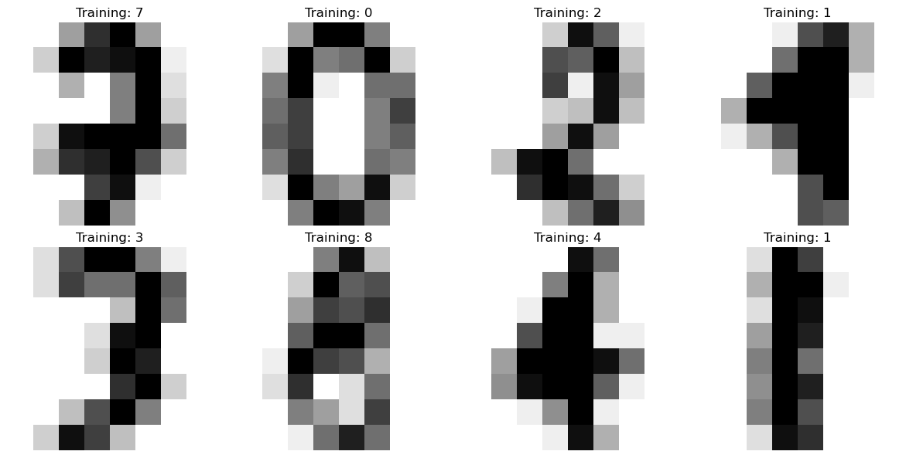
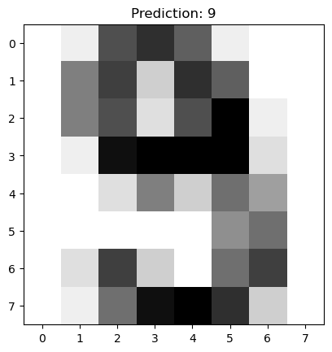

Apendix:
Contents
Apendix:#
A Neural network that recognizes handwritten numbers#
#### Example from sklearn
March 2021#
# Standard scientific Python imports
import matplotlib.pyplot as plt
import numpy as np
# Import datasets, classifiers and performance metrics
from sklearn import datasets, svm, metrics
from sklearn.model_selection import train_test_split
Import the data and show some examples#
digits = datasets.load_digits()
def plt_images(images, targets, nrows = 1, ncols = 2):
_, axes = plt.subplots(nrows, ncols, figsize=( 3 * ncols , 3 * nrows))
for ax, image, target in zip(axes.flatten(), images, targets):
ax.set_axis_off()
#ax.imshow(image, cmap=plt.cm.gray_r, interpolation='nearest')
ax.imshow(image, cmap = plt.cm.gray_r) # interpolation='nearest')
ax.set_title('Training: %i' % target)
plt.tight_layout()
return
print(digits.images[0], digits.target[0])
[[ 0. 0. 5. 13. 9. 1. 0. 0.]
[ 0. 0. 13. 15. 10. 15. 5. 0.]
[ 0. 3. 15. 2. 0. 11. 8. 0.]
[ 0. 4. 12. 0. 0. 8. 8. 0.]
[ 0. 5. 8. 0. 0. 9. 8. 0.]
[ 0. 4. 11. 0. 1. 12. 7. 0.]
[ 0. 2. 14. 5. 10. 12. 0. 0.]
[ 0. 0. 6. 13. 10. 0. 0. 0.]] 0
digits = datasets.load_digits()
size = len(digits.target)
nrows, ncols = 2, 4
idx = np.random.choice(range(size), ncols * nrows)
plt_images(digits.images[idx], digits.target[idx], nrows, ncols)

NN learning#
# flatten the images
n_samples = len(digits.images)
data = digits.images.reshape((n_samples, -1))
# Create a classifier: a support vector classifier
clf = svm.SVC(gamma=0.001)
# Split data into 50% train and 50% test subsets
X_train, X_test, y_train, y_test = train_test_split(
data, digits.target, test_size=0.5, shuffle=False)
# Learn the digits on the train subset
clf.fit(X_train, y_train)
# Predict the value of the digit on the test subset
predicted = clf.predict(X_test)
Test#
idx = np.random.choice(range(len(y_test)), 1)[0]
image = X_test[idx]
prediction = predicted[idx]
test = y_test[idx]
image = image.reshape(8, 8)
plt.imshow(image, cmap=plt.cm.gray_r)
plt.title(f'Prediction: {prediction}')
plt.show()
input('Continue (y/n) ?')
print(f'True: {test}')

---------------------------------------------------------------------------
StdinNotImplementedError Traceback (most recent call last)
/var/folders/56/_pmdccc97ljb_l3v3s6gkrxm0000gn/T/ipykernel_8577/4236989993.py in <module>
7 plt.title(f'Prediction: {prediction}')
8 plt.show()
----> 9 input('Continue (y/n) ?')
10 print(f'True: {test}')
~/opt/anaconda3/lib/python3.9/site-packages/ipykernel/kernelbase.py in raw_input(self, prompt)
1172 """
1173 if not self._allow_stdin:
-> 1174 raise StdinNotImplementedError(
1175 "raw_input was called, but this frontend does not support input requests."
1176 )
StdinNotImplementedError: raw_input was called, but this frontend does not support input requests.